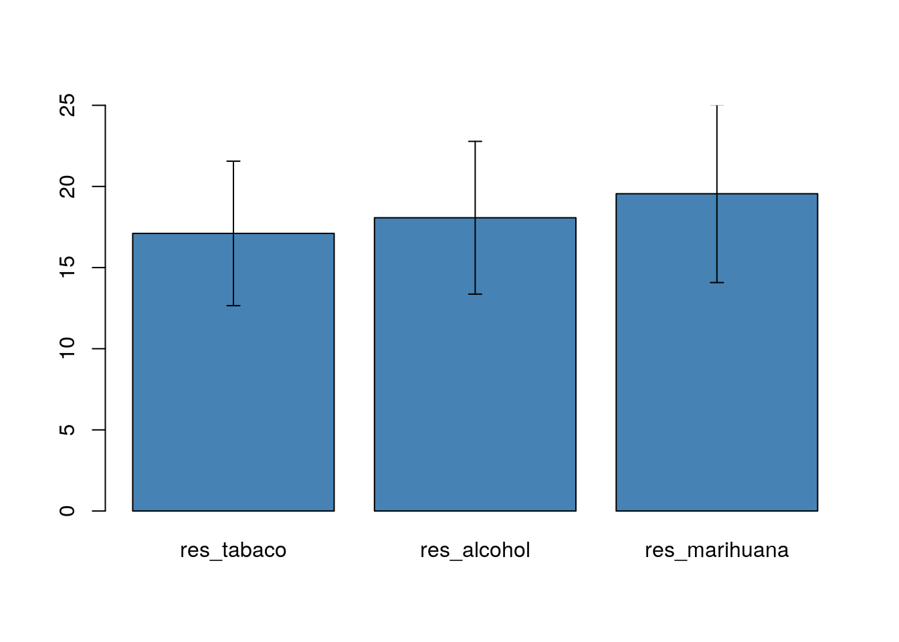
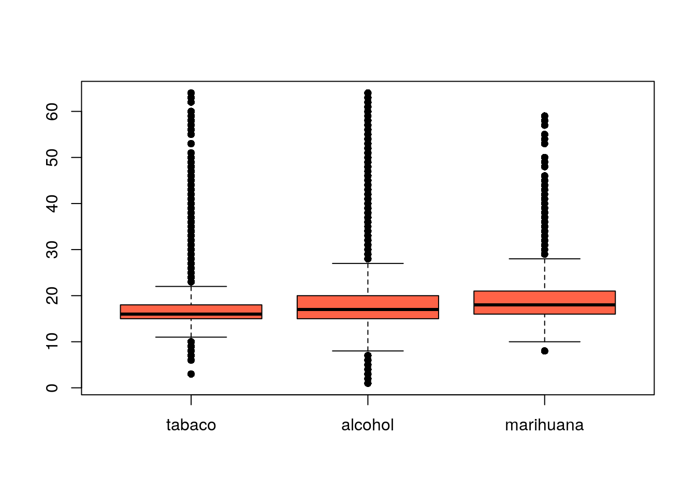

Capítulo 13 Gráficos de Resumen
13.1 Gráficos de barras
Los gráficos de barras también sirven para graficar las medias. También podemos agregar las
library(Hmisc)## Seleccionamos las variables de edad de inicio de consumo
## para tabaco, alcohol y marihuana
edad_tabaco <- enprecosp$BITA03[enprecosp$BITA03 != 99]
edad_alcohol <- enprecosp$BIBA03[enprecosp$BIBA03 != 99]
edad_marihuana <- enprecosp$BIMA03[enprecosp$BIMA03 != 99]
## Calculamos la media y el desvío estandar
res_tabaco <- c(mean(edad_tabaco, na.rm = TRUE), sd(edad_tabaco, na.rm = TRUE))
res_alcohol <- c(mean(edad_alcohol, na.rm = TRUE), sd(edad_alcohol, na.rm = TRUE))
res_marihuana <- c(mean(edad_marihuana, na.rm = TRUE), sd(edad_marihuana, na.rm = TRUE))
## Construimos una matriz con los resultados
m <- cbind(res_tabaco, res_alcohol, res_marihuana)
## Armamos el gráfico de barras
b <- barplot(m[1,], ylim = c(0, 25), col = "steelblue")
# errbar(colnames(m), m[1,], m[1,] + m[2,], m[1,] - m[2,])
arrows(b, m[1,] - m[2,], b, m[1,] + m[2,], length=0.05, angle=90, code=3)
# x <- factor(c("tabaco", "alcohol", "marihuana"))
# medias <- c(mean(edad_tabaco, na.rm = TRUE),
# mean(edad_alcohol, na.rm = TRUE),
# mean(edad_alcohol, na.rm = TRUE))
# sd <- c(sd(edad_tabaco, na.rm = TRUE),
# sd(edad_alcohol, na.rm = TRUE),
# sd(edad_alcohol, na.rm = TRUE))
#
# barplot(height = medias, width = 1, col = "steelblue")13.2 Gráficos de caja
boxplot(list(edad_tabaco, edad_alcohol, edad_marihuana),
names = c("tabaco", "alcohol", "marihuana"),
col = "tomato",
pch = 16)
Attaching package: 'dplyr'The following object is masked from 'package:kableExtra':
group_rowsThe following objects are masked from 'package:Hmisc':
src, summarizeThe following objects are masked from 'package:stats':
filter, lagThe following objects are masked from 'package:base':
intersect, setdiff, setequal, union